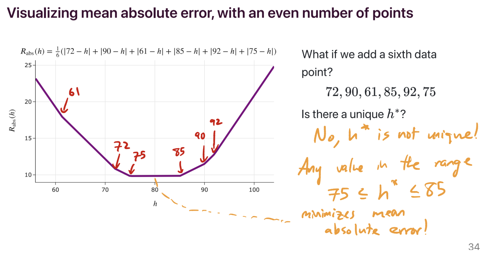
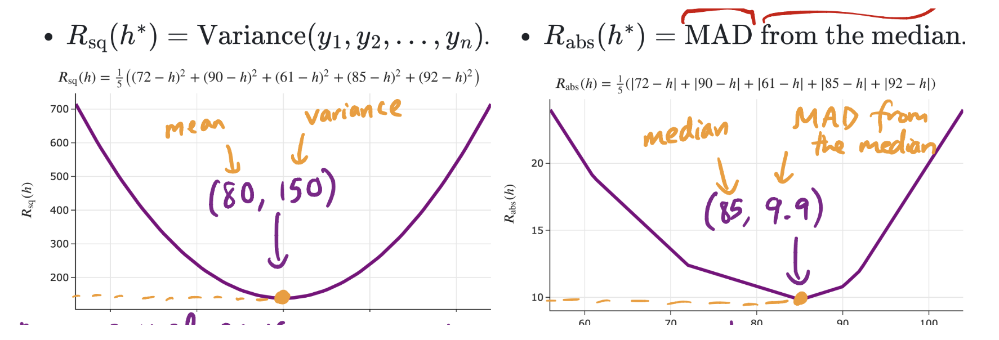
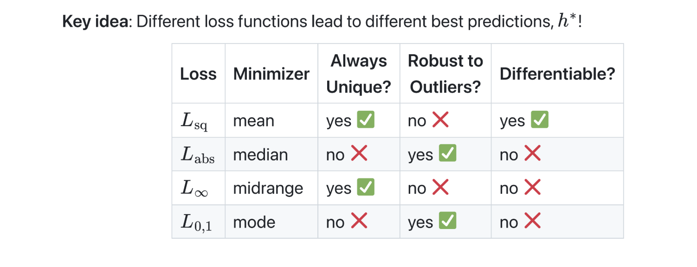
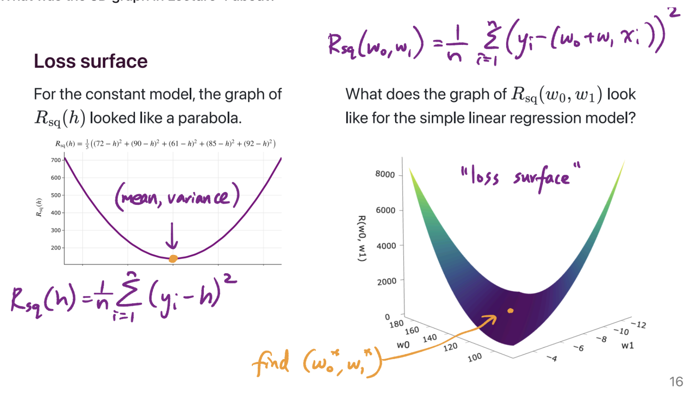

🙋FAQs (new)
Jump to:
Loss Functions & Empirical Risk
Isn’t the mean affected by outliers? How is it the best prediction?
A prediction is only the “best” relative to some loss function. When using the constant model, \(H(x) = h\), the mean is the best prediction only if we choose to use the squared loss function, \(L_\text{sq}(y_i, h) = (y_i - h)^2\). If we choose another loss function, like absolute loss \(L_\text{abs}(y_i, h) = \lvert y_i - h \rvert\), the mean is no longer the best prediction.
The key idea is that different loss functions lead to different “best” parameters.
Lecture(s) to Review:
Does empirical risk = mean squared error?
“Empirical risk” is another term for “average loss for whatever loss function you’re using.” Any loss function \(L(y_i, h)\) can be used to create an empirical risk function \(R(h)\). We’ve seen two common loss function choices:
- When using absolute loss, \(L_\text{abs}(y_i, h) = \lvert y_i - h\rvert\), the empirical risk, \(R_\text{abs}(y_i, h) = \frac{1}{n} \sum_{i = 1}^n \lvert y_i - h\rvert\), has a special name: “mean absolute error.”
- When using squared loss, \(L_\text{sq}(y_i, h) = (y_i - h)^2\), the empirical risk, \(R_\text{sq}(y_i, h) = \frac{1}{n} \sum_{i = 1}^n (y_i - h)^2\), has a special name: “mean squared error.”
Lecture(s) to Review:
What does it mean for a minimizer to be unique?
Let’s suppose we’re working with the constant model, \(H(x) = h\).
The minimizer of mean squared error is unique, because the minimizer of mean squared error for the constant model is the mean, and the mean of a collection of numbers \(y_1, y_2, ..., y_n\) is always just a single number. Specifically, it’s the number \(\frac{y_1 + y_2 + ... + y_n}{n}\).
The minimizer of mean absolute error is not necessarily unique. It’s unique when there’s an odd number of data points – specifically, if the data points are sorted in order, with \(y_1\) being the smallest and \(y_n\) being the largest, then the minimizer of mean absolute error is the median, \(y_{\frac{n+1}{2}}\). But if there are an even number of data points, then any of the infinitely many numbers on the number line between \(y_{\frac{n}{2}}\) and \(y_{\frac{n}{2} + 1}\) minimize mean absolute error, so the minimizer of mean absolute error is not necessarily unique.
For example, in the dataset 72, 90, 61, 85, 92, 75, there are an infinite number of possible predictions that minimize mean absolute error. 75 is one of them, but so is 75.001, 76, 79.913, etc – anything between 75 and 85, inclusive, minimizes mean absolute error.

Lecture(s) to Review:
What was the point of plugging in \(h^*\) into \(R(h)\)?
We spent the first week of class minimizing empirical risk, \(R(h)\). We found that, depending on our choice of loss function, \(h^*\) ended up being a different measure of the center of our dataset. The point was to show that the values of \(R(h)\) actually have some meaning as well, and in particular, the smallest possible value of \(R(h)\) (which is \(R(h^*)\)) happens to describe the spread of our dataset.

In the image above, \(h^*\) is the \(x\)-coordinate of the vertex (80 and 85). We know what 80 and 85 mean – they’re the mean and median of the dataset 72, 90, 61, 85, 92, respectively. What we were trying to give context to is what 150 and 9.9 mean – they’re the variance and the mean absolute deviation from the median of our dataset. Both the variance and mean absolute deviation from the median are measurements of spread.
Lecture(s) to Review:
Are there more loss functions outside of what we learned in class?
There are plenty! For example, there’s Huber loss, which is like a smoothed version of absolute loss (it’s absolute loss, with the corner at the bottom replaced with the bottom of a parabola). There’s also cross-entropy loss, also known as “log loss”, which is designed for models that predict probabilities (like logistic regression). These, and many more, will come up in future ML classes, like DSC 140A and CSE 158/DSC 148.
Lecture(s) to Review:
- N/A
How do I know which loss function to choose in practice?
As we’ve seen, different loss functions have different properties. At least with regards to the constant model:

In practice, various models have a “default” choice of loss function. Regression usually uses squared loss, not just because squared loss is easily differentiable, but also because squared loss comes with lots of nice theoretical properties (which you’ll learn about in DSC 140A, like the fact that implicitly assumes that the distribution of errors is normal/Gaussian). But depending on your model, you can just try different loss functions and see which ends up creating the model with the best performance!
Lecture(s) to Review:
- N/A
What was the point of the midrange and infinity loss? Will I actually use that in practice?
I’ve never heard of anyone using \(\lvert y_i - h\rvert^p\) with \(p \rightarrow \infty\) as a loss function in practice, so no. But the point of us studying that was for us to get a better understanding of how different loss functions penalize different kinds of errors, and in particular, how the optimal constant prediction is influenced by outliers.
Again, for the constant model \(H(x) = h\):
- Absolute loss, \(\lvert y_i - h\rvert\), isn’t sensitive to outliers, it’s very robust. Remember, the minimizer (the median) was found by finding the \(h\) where (# points to the left of \(h\) = # points to the right of \(h\)).
- Squared loss, \((y_i - h)^2\), is more sensitive to outliers. Remember, the minimizer (the mean) was found by finding the \(h\) where \(-\frac{2}{n} \sum_{i = 1}^n (y_i - h)= 0\), because \(-\frac{2}{n} \sum_{i = 1}^n (y_i - h)\) is the derivative of \(R_\text{sq}(h) = \frac{1}{n} \sum_{i = 1}^n (y_i - h)^2\). Since this is the case, the mean is “pulled” in the direction of the outliers, since it needs to balance the deviations.
- Following the pattern, \(\lvert y_i - h\rvert^3\) would be even more sensitive to outliers.
As we keep increasing the exponent, \(\lvert y_i - h\rvert^p\) creates a prediction that’s extremely sensitive to outliers, to the point where its goal is to balance the worst case (maximum distance) from any one point. That’s where the midrange comes in – it’s in the middle of the data, so it’s not too far from any one point.
So while no, you won’t really use the idea of “infinity loss” in practice, I hope that by deeply understanding how it works, you’ll better understand how loss functions (including those we haven’t seen in class, but do exist in the real world) work and impact your predictions.
Lecture(s) to Review:
- Lecture 3 (Slide 19)
Simple Linear Regression
In Lecture 4, is the \(x_i\) not part of the summation since it is out of the parentheses?
The question was referring to a summation like this one:
\[\sum_{i = 1}^n (y_i - w_0 - w_1 x_i) x_i\]Here, \(x_i\) is indeed a part of the summation. The sum is of \(n\) terms, each of which are the form \((y_i - w_0 - w_1 x_i) \cdot x_i\). That is, the summation above is equivalent to:
\[\sum_{i = 1}^n \left( (y_i - w_0 - w_1 x_i) x_i \right)\]On the other hand, the following expression is invalid, since \(x_i\) doesn’t have any meaning when not part of a summation over \(i\):
\[\left( \sum_{i = 1}^n (y_i - w_0 - w_1 x_i) \right) x_i\]Lecture(s) to Review:
What was the 3D graph in Lecture 4 about?

On the left, we have the graph of the mean squared error of a constant prediction, \(h\), on the dataset 72, 90, 61, 85, 92. It shows us that there is some best \(h\), which we’ve been calling \(h^*\), that makes the mean squared error as small as possible. We showed, using calculus, that the value of \(h^*\) for any dataset is \(\text{Mean}(y_1, y_2, ..., y_n)\).
On the right, we have the graph of mean squared error of the line \(H(x) = w_0 + w_1 x\). The dataset is the dataset of departure times and commute times we’ve been using as our running example. Specifically:
The two axes on the “ground” of the plot represent different intercepts, \(w_0\), and slopes, \(w_1\), that we could be using for making predictions.
The height of the graph above any \((w_0, w_1)\) pair is \(\frac{1}{n} \sum_{i = 1}^n (y_i - (w_0 + w_1 x_i))^2\). \(x_i\) represents the \(i\)th departure time (e.g. 8.5, corresponding to 8:30AM) and \(y_i\) represents the \(i\)th actual commute time (e.g. 75 minutes).
The point was to show what the function \(R_\text{sq}(w_0, w_1) = \frac{1}{n} \sum_{i = 1}^n (y_i - (w_0 + w_1 x_i))^2\) actually looks like, before we went to use calculus to minimize it. It kind of looks like a bowl, and has a clearly defined minimum. Calculus helped us find that minimum, which occurs at \(w_0^* = \bar{y} - w_1^* \bar{x}\) and \(w_1^* = \frac{\sum_{i = 1}^n (x_i - \bar{x})(y_i - \bar{y})}{\sum_{i = 1}^n (x_i - \bar{x})^2}\).
Lecture(s) to Review:
Can we minimize the mean absolute error of the simple linear regression model?
Yes, we can! The issue is just that there doesn’t exist a closed-form solution, i.e. a formula, for the optimal \(w_0^*\) and \(w_1^*\) in:
\[R_\text{abs}(w_0, w_1) = \frac{1}{n} \sum_{i = 1}^n \lvert y_i - (w_0 + w_1 x_i) \rvert\]So, we have to use the computer to approximate the answer. Regression with squared loss is called “least squares regression,” but regression with absolute loss is called “least absolute deviations regression.” You can learn more here!
Lecture(s) to Review:
- N/A
Is there a more detailed version of the MSE proof shown in Lecture 5?
Yes. Here’s a proof of the fact that \(R_\text{sq}(w_0^*, w_1^*) = \sigma_y^2 (1 - r^2)\).
First, note that since \(\sigma_x^2 = \frac{1}{n} \sum_{i=1}^n (x_i - \bar{x})^2\), we have that \(\sum_{i = 1}^n (x_i - \bar{x})^2 = n \sigma_x^2\). Then:
\(R_{\text{sq}}( w_0^*, w_1^* )\) = \(\frac{1}{n} \sum_{i=1}^{n} (y_i - \bar{y} - w_1^*(x_i - \bar{x}))^2\)
= \(\frac{1}{n} \sum_{i=1}^{n} \left[ (y_i - \bar{y})^2 - 2 w_1^*(x_i - \bar{x})(y_i - \bar{y}) + w_1^{*2} (x_i - \bar{x})^2 \right]\)
= \(\frac{1}{n} \sum_{i=1}^{n} (y_i - \bar{y})^2 - \frac{2w_1^*}{n} \sum_{i=1}^{n} ((x_i - \bar{x})(y_i - \bar{y})) + \frac{w_1^{*2}}{n} \sum_{i=1}^{n} (x_i - \bar{x})^2\)
= \(\sigma_y^2 - \frac{2w_1^*}{n} \sum_{i=1}^{n} ((x_i - \bar{x})(y_i - \bar{y})) + w_1^{*2} \sigma_x^2\)
= \(\sigma_y^2 - \frac{2w_1^*}{n} \frac{\sum_{i=1}^{n} ((x_i - \bar{x})(y_i - \bar{y}))}{\sum_{i=1}^{n} (x_i - \bar{x})^2} (\sum_{i=1}^{n} (x_i - \bar{x})^2) + r^2 \sigma_y^2\)
= \(\sigma_y^2 - 2w_1^* \frac{\sum_{i=1}^{n} ((x_i - \bar{x})(y_i - \bar{y}))}{\sum_{i=1}^{n} (x_i - \bar{x})^2} \frac{\sum_{i=1}^{n} (x_i - \bar{x})^2}{n} + r^2 \sigma_y^2\)
= \(\sigma_y^2 - 2w_1^{*2} \sigma_x^2 + r^2 \sigma_y^2\)
= \(\sigma_y^2 - 2(r^2\frac{\sigma_y^2}{\sigma_x^2}) \sigma_x^2 + r^2 \sigma_y^2\)
= \(\sigma_y^2 - 2r^2\sigma_y^2 + r^2 \sigma_y^2\)
= \(\sigma_y^2 - r^2 \sigma_y^2\)
= \(\sigma_y^2 (1 - r^2)\)
Lecture(s) to Review:
- Lecture 5 (Slide 25)
Linear Algebra
Can you recap the proof of the formula for \(w_1^*\) that includes \(r\)?
Sure!
Let’s start with the formulas for \(w_1^*\) and \(r\):
\[w_1^* = \frac{\sum_{i=1}^n (x_i - \bar{x})(y_i - \bar{y})}{\sum_{i=1}^n (x_i - \bar{x})^2}\] \[r = \frac{1}{n} \sum_{i=1}^n \left(\frac{(x_i - \bar{x})}{\sigma_x}\right) \left(\frac{(y_i - \bar{y})}{\sigma_y}\right).\]Let’s try to rewrite the formula for \(w_1^*\) in terms of \(r\).
Step 1: Numerator
First, we can simplify the formula for \(r\) by factoring \(\sigma_x \sigma_y\) out of the summation.
\[r = \frac{1}{n \sigma_x \sigma_y} \sum_{i=1}^n (x_i - \bar{x})(y_i - \bar{y}).\]Rearranging this gives us the very pretty
\[\sum_{i=1}^n (x_i - \bar{x})(y_i - \bar{y}) = rn\sigma_x\sigma_y.\]Therefore, the numerator of the formula for \(w_1^*\) can be expressed as \(rn\sigma_x\sigma_y\).
Step 2: Denominator
Let’s start with the formula standard deviation \(\sigma_x\) defined as
\[\sigma_x = \sqrt{\frac{1}{n}\sum_{i=1}^n (x_i - \bar{x})^2}.\]This means that the variance \(\sigma_x^2\) is
\[\sigma_x^2 = \frac{1}{n}\sum_{i=1}^n (x_i - \bar{x})^2.\]Multiplying through by \(n\) gives
\[n\sigma_x^2 = \sum_{i=1}^n (x_i - \bar{x})^2.\]Therefore, the denominator of the formula for \(w_1^*\) can be expressed as \(n\sigma_x^2\).
Conclusion
Putting these parts together, we can rewrite the original formula for \(w_1^*\):
\[w_1^* = \frac{rn\sigma_x\sigma_y}{n\sigma_x^2}.\]And, simplifying this expression, we arrive at a beautiful result:
\[w_1^* = r \cdot \frac{\sigma_y}{\sigma_x}.\]Lecture(s) to Review
- Lecture 5 (Slide 18)
What do you mean by “the inner dimensions need to match in order to perform matrix multiplication”?
Think about the multiplication of two matrices:
\[A = \begin{bmatrix} a_{11} & a_{12} & a_{13}\\ a_{21} & a_{22} & a_{23}\end{bmatrix} \text{ and } B = \begin{bmatrix} b_{11} & b_{12} \\ b_{21} & b_{22} \\ b_{31} & b_{32}\end{bmatrix}\]Let’s call \(C\) the product matrix between the two.
As we discussed in lecture, every entry of this resulting matrix \(C\) will be the result of the dot product of a row of \(A\) with a column of \(B\). For example, one entry of the product matrix \(C\) is formed by dotting \(\begin{bmatrix} a_{11} & a_{12} & a_{13}\end{bmatrix}\) with \(\begin{bmatrix}b_{11} \\ b_{21} \\ b_{31} \end{bmatrix}\).
This dot product is only possible if the “length” of each row in \(A\) is equal to the “height” of each column in \(B\). In our example, this dot product is defined by
\[\begin{bmatrix} (a_{11} \cdot b_{11}) + (a_{12} \cdot b_{21}) + (a_{13} \cdot b_{31}) \end{bmatrix}\]Clearly, if the number of entries in the first row of \(A\) were not equal to the number of entries in the first column of \(B\), this dot product would not make sense. For example, say \(B\) only had \(2\) rows. Then, when computing the entries of our product \(C\), we would run into a situation like this:
\[\begin{bmatrix} (a_{11} \cdot b_{11}) + (a_{12} \cdot b_{21}) + (a_{13} \cdot \text{...?}) \end{bmatrix}\]And we could not compute the entry of \(C\), making our matrix multiplication impossible.
In essence, the multiplication of matrices occurs when the inner dimensions of A and B, columns and rows, respectively, match. If they do not, the dot product between the rows of \(A\) and the columns of \(B\) would not be possible, and we cannot create a product matrix \(C\).
Lecture(s) to Review:
What’s the relationship between spans, projections, and multiple linear regression?
Spans
The span of a set of vectors \(\{\vec{x}_1, \vec{x}_2, \ldots, \vec{x}_d\}\) is the set of all possible linear combinations of these vectors. In other words, the span defines a subspace in \(\mathbb{R}^n\) that contains all possible combinations of the independent variables.
\[\text{Span}\{\vec{x}_1, \vec{x}_2, \ldots, \vec{x}_d\} = \{w_1 \vec{x}_1 + w_2 \vec{x}_2 + \ldots + w_d \vec{x}_d\}.\]In the context of multiple linear regression, the span of the feature vectors represents all possible values that can be predicted using a linear combination of the feature vectors.
Projections
A projection of the observation vector \(\vec{y}\) onto the span of the feature vectors \(\{\vec{x}_1, \vec{x}_2, \ldots, \vec{x}_p\}\) is any vector \(\vec{h}\) that lies in this span.
The distance between the observations and the projection of \(\vec{y}\) into the span of the feature vectors represents the error of a prediction. That is, each projection of \(\vec{y}\) into the span of the feature vectors is defined by scaling each of the feature vectors by a certain amount (\(w_1\), \(w_2\), etc.) and summing them; the distance from this linear combination of the feature vectors to the actual observed values of \(\vec{y}\) is the error of a certain prediction.
This error is written as
\(\vec{e} = \vec{y} - X\vec{w}\),
where \(X\) represents the design matrix made up of the feature vectors, and \(\vec{w}\) represents the coefficients that you are scaling the feature vectors by to obtain some projection of \(\vec{y}\) into the span of \(X\).
The orthogonal projection of \(\vec{y}\) into \(X\) is the one that minimizes the error vector (Or the distance between the predicted values of \(\vec{y}\) and the actual values of \(\vec{y}\)).
Multiple Linear Regression
Tying this all together, one can frame multiple linear regression as a projection problem; Given some set of feature vectors \(\vec{x}_1, \vec{x}_2, ... , \vec{x}_d\), and an observation vector \(\vec{y}\), what are the scalars \(w_1, w_2, ... , w_p\) that give a vector in the span of the feature vectors that is the closest to \(\vec{y}\)?
In other words, how close can we get to the observed values of \(\vec{y}\), while in the span of our feature vectors?
This framing of multiple linear regression also leads us to the normal equations
\[\vec{w}^* = (X^\mathrm{T}X)^{-1}X^\mathrm{T}\vec{y}.\]For more visual intuition of this idea, check out this tutor-made animation!
Lecture(s) to Review:
Why does the design matrix have a column of all 1s?
In linear regression, the design matrix \(X\) represents the features \(x_1, x_2, \ldots, x_d\). Each row of \(X\) corresponds to one data point, and each column corresponds to one feature. The parameter vector \(\vec{w}\), which we multiply by \(X\) to obtain our predictions \(\vec{h}\), contains the weights for each feature, including the intercept or bias term \(w_0\).
The term \(w_0\) is a constant that helps adjust the linear regression model vertically. This term is universal between predictions. In other words, regardless of the values of the other features \(x_1, x_2, \ldots, x_d\), the value of \(w_0\) will be the same. Let’s explore how this relates to our design matrix.
When the design matrix \(X\) is multiplied by the parameter vector \(\mathbf{w}\), each row of \(X\) produces a prediction \(h\) depending on the values of the features in the row. Each value in the row is multiplied by its associated weight in the parameter vector, and the resulting products are summed to form a prediction. However, we want the weight associated with \(w_0\) to output the same constant bias term no matter the values in \(X\).
To ensure this, we include a column of 1s at the beginning of the design matrix \(X\). This column represents the constant contribution of the bias term \(w_0\), and will always be multiplied by \(w_0\) when a particular observation is being used to make a prediction. In other words, regardless of the values of the features in \(X\), every prediction will have \(w_0 \cdot 1\) added to it. Let’s give a quick example of this.
Suppose we have a linear regression problem with two features. The design matrix \(X\) is:
\[X = \begin{bmatrix} 1 & x_{11} & x_{12} \\ 1 & x_{21} & x_{22} \\ 1 & x_{31} & x_{32} \end{bmatrix}\]And the parameter vector \(\vec{w}\) is:
\[\vec{w} = \begin{bmatrix} w_0 \\ w_1 \\ w_2 \end{bmatrix}\]To obtain the predicted values \(\vec{h}\):
\[\vec{h} = X \vec{w} = \begin{bmatrix} 1 & x_{11} & x_{12} \\ 1 & x_{21} & x_{22} \\ 1 & x_{31} & x_{32} \end{bmatrix} \begin{bmatrix} w_0 \\ w_1 \\ w_2 \end{bmatrix} = \begin{bmatrix} w_0 + w_1 x_{11} + w_2 x_{12} \\ w_0 + w_1 x_{21} + w_2 x_{22} \\ w_0 + w_1 x_{31} + w_2 x_{32} \end{bmatrix}\]As you can see in this example, our predictions all included the constant bias term \(w_0\), because in forming our predictions, \(w_0\) was always scaled by \(1\), the first entry in each row of our design matrix. This setup ensures that the intercept is included in the model, and does not interfere with the relationship between the other features and the prediction.
Lecture(s) to Review:
What is the projection of \(\vec{y}\) onto \(\text{span}(\vec{x})\) – is it \(w^*\) or \(w^* \vec{x}\)?
In multiple linear regression, the orthogonal projection of the vector \(\vec{y}\) onto the span of the vectors \(\{\vec{x}^{(1)}, \vec{x}^{(2)}, ..., \vec{x}^{(n)}\}\) is expressed as:
\[\vec{h}^* = X\vec{w}^*.\]Here, \(\vec{w}^*\) is a vector of scalar coefficients (\(w_1, w_2\), etc.), and \(X\) is the design matrix. In other words, \(\vec{w}^*\) provides the specific coefficients with which to form a linear combinations of your features to make predictions \(\vec{h}^*\).
So, to answer the question directly: \(w^* \vec{x}\) is the projection of \(\vec{y}\) onto \(\text{span}\{\vec{x}^{(1)}, \vec{x}^{(2)}, ..., \vec{x}^{(n)}\}\), and \(w^*\) is the set of scalars used to make this projection when multiplied with \(\vec{x}\)
Lecture(s) to Review:
- Lecture 6 (Slide 28)
Do the normal equations work even when there is only one column in the matrix \(X\)?
Yes! Let’s look at two different cases where this can occur.
Case 1: \(X\) is a column of ones
If \(X\) is a column of ones, the model \(H(\vec{x}) = w_0\) fits a constant line through the data. Using the normal equations,
\[\vec{1}^T \vec{1} w_0^* = \vec{1}^T \vec{y}.\]\(\vec{1}^T \vec{1} = n\), where \(n\) is the number of data points, and \(\vec{1}^T \mathbf{y} = \sum_{i=1}^n y_i\). Thus, the normal equations become:
\[n \cdot w_0^* = \sum_{i=1}^n y_i.\]And, solving for \(w_0^*\), we get
\[w_0^* = \frac{1}{n} \sum_{i=1}^n y_i,\]which is the mean of the target values.
Case 2: \(X\) has different values
Now, let’s imagine that \(X\) is a column vector with different values for each data point, representing a single feature:
\[X = \begin{bmatrix} x_1 \\ x_2 \\ \vdots \\ x_n \end{bmatrix}.\]In this case, the model \(H(x) = w_1^*x\) fits a line through the origin. The normal equations become
\[X^T X w_1^* = X^T \vec{y}.\]Calculating the elements, we have
\[\sum_{i=1}^n x_i^2 \cdot w_1^* = \sum_{i=1}^n x_i y_i,\]and the normal equations are reduced to
\[w_1^* = \frac{\sum_{i=1}^n x_i y_i}{\sum_{i=1}^n x_i^2}.\]So, to answer your question, we can absolutely use the normal equations when our design matrix \(X\) has only one column!
Lecture(s) to Review:
When do two vectors in \(\mathbb{R}^2\) span all of \(\mathbb{R}^2\)? When do \(n\) vectors in \(\mathbb{R}^n\) span all of \(\mathbb{R}^n\)?
Two vectors in \(\mathbb{R}^2\) span all of \(\mathbb{R}^2\) when they are linearly independent (You cannot express one as a scalar multiple of the other). In other words, if \(\vec{u}\) and \(\vec{v}\) are two vectors in \(\mathbb{R}^2\), they will span all of \(\mathbb{R}^2\) if \(\vec{u}\) and \(\vec{v}\) are not collinear, or on the same line.
Similarly, \(n\) vectors in \(\mathbb{R}^n\) span all of \(\mathbb{R}^n\) when they are linearly independent. This means that no vector in the set can be expressed as a linear combination of the others.
Intuition
To span a space means to cover it entirely.
Think of two vectors in \(\mathbb{R}^2\). If one vector is a scalar multiple of the other, then they both point in the same direction or opposite directions, essentially lying on the same line. This means they can only cover that line and cannot cover any other directions.
In higher dimensions, the same principle applies. For example, in \(\mathbb{R}^3\), three linearly independent vectors point in different directions and can cover all of three-dimensional space. However, if one is a linear combination of the others, then the three vectors lie on the same plane, and can only span that plane.
Lecture(s) to Review:
- Lecture 6 (Slide 26)
Multiple Linear Regression
What’s the relationship between spans, projections, and multiple linear regression?
Spans
The span of a set of vectors \(\{\vec{x}_1, \vec{x}_2, \ldots, \vec{x}_d\}\) is the set of all possible linear combinations of these vectors. In other words, the span defines a subspace in \(\mathbb{R}^n\) that contains all possible combinations of the independent variables.
\[\text{Span}\{\vec{x}_1, \vec{x}_2, \ldots, \vec{x}_d\} = \{w_1 \vec{x}_1 + w_2 \vec{x}_2 + \ldots + w_d \vec{x}_d\}.\]In the context of multiple linear regression, the span of the feature vectors represents all possible values that can be predicted using a linear combination of the feature vectors.
Projections
A projection of the observation vector \(\vec{y}\) onto the span of the feature vectors \(\{\vec{x}_1, \vec{x}_2, \ldots, \vec{x}_p\}\) is any vector \(\vec{h}\) that lies in this span.
The distance between the observations and the projection of \(\vec{y}\) into the span of the feature vectors represents the error of a prediction. That is, each projection of \(\vec{y}\) into the span of the feature vectors is defined by scaling each of the feature vectors by a certain amount (\(w_1\), \(w_2\), etc.) and summing them; the distance from this linear combination of the feature vectors to the actual observed values of \(\vec{y}\) is the error of a certain prediction.
This error is written as
\(\vec{e} = \vec{y} - X\vec{w}\),
where \(X\) represents the design matrix made up of the feature vectors, and \(\vec{w}\) represents the coefficients that you are scaling the feature vectors by to obtain some projection of \(\vec{y}\) into the span of \(X\).
The orthogonal projection of \(\vec{y}\) into \(X\) is the one that minimizes the error vector (Or the distance between the predicted values of \(\vec{y}\) and the actual values of \(\vec{y}\)).
Multiple Linear Regression
Tying this all together, one can frame multiple linear regression as a projection problem; Given some set of feature vectors \(\vec{x}_1, \vec{x}_2, ... , \vec{x}_d\), and an observation vector \(\vec{y}\), what are the scalars \(w_1, w_2, ... , w_p\) that give a vector in the span of the feature vectors that is the closest to \(\vec{y}\)?
In other words, how close can we get to the observed values of \(\vec{y}\), while in the span of our feature vectors?
This framing of multiple linear regression also leads us to the normal equations
\[\vec{w}^* = (X^\mathrm{T}X)^{-1}X^\mathrm{T}\vec{y}.\]For more visual intuition of this idea, check out this tutor-made animation!
Lecture(s) to Review:
When \(X^TX\) isn’t invertible, how do we solve the normal equations?
When \(X^TX\), we cannot solve the normal equations using traditional methods. That is, if we cannot invert \(X^TX\), we cannot solve \(w = (X^\mathrm{T}X)^{-1}X^\mathrm{T}y\).
Generally, this situation arises when one of the columns of our design matrix \(X\) is a linear combination of the other columns in \(X\). This leads to an infinite amount of solutions satisfying the normal equations, and so finding a unique solution is impossible. However, if you are interested in other methods with which to solve the normal equations when \(X\) is not invertible, feel free to explore them! As a starting point, try researching the Moore-Penrose pseudo-inverse and ridge regression as two other approaches to solving for an optimal parameter vector!
Lecture(s) to Review:
- Lecture 7 (Slide 34)
What does it mean for a matrix to be full rank?
A matrix is full rank when each column in the matrix is linearly independent.
In linear regression, the design matrix \(X\) must be full rank to have a unique solution for the normal equations. If \(X\) is not full rank, it implies multicollinearity among the features, which leads to an infinite amount of solutions when solving for the optimal parameters \(\vec{w}^*\). For clarity:
-
Full Rank:
\[X^T X \vec{w}^* = X^T \vec{y}\]
If the design matrix \(X\) is full rank, then all of its columns are linearly independent. This allows the normal equations:to have a unique solution.
-
Not Full Rank:
If \(X\) is not full rank, then some columns of \(X\) are linear combinations of other columns. This leads to multicollinearity, which results in infinitely many solutions for the normal equations.
Lecture(s) to Review:
In multiple linear regression, is \(\vec{h}^*\) orthogonal to \(\vec{y}\)?
\(\vec{h}^*\) is the optimal hypothesis vector; That is, \(\vec{h}^* = X\vec{w}^*\). This means that \(\vec{h}^*\) is the orthogonal projection of our observation vector \(\vec{y}\) into the span of our feature vectors \(\vec{x}^{(1)}, \vec{x}^{(2)}, ..., \vec{x}^{(d)}\). As such, \(\vec{h}^*\) is orthogonal to the error vector \(\vec{e} = \vec{y} - \vec{h}^*\). However, this relationship does not imply orthogonality with \(\vec{y}\), or any other vector aside from the error vector \(\vec{e}\)
Lecture(s) to Review:
Why does the multiple linear regression model with two features look like a plane?
When we perform multiple linear regression with two features, we take information from two independent variables and predict some value for our target variable. Let’s think about this relates to a plane, both algebraically and geometrically.
Algebraically, if our features are \(x_1\) and \(x_2\), our prediction function takes the form
\[H(\vec{x}) = w_0^* + w_1^*x_1 + w_2^*x_2,\]which is the general formula for a plane.
Geometrically, multiple linear regression with two features is the same idea:
Each feature (\(x_1\) and \(x_2\)) corresponds to one axis, and our target variable (the variable we are trying to predict), is represented by the vertical axis. When we vary the values on the \(x_1\) and \(x_2\) axes, we are exploring the values of our prediction function when we can vary \(2\) features- this forms a \(2\)-dimensional surface.
If this question also concerns why these predictions form a plane instead of some other surface, perhaps with curves or bends, we can also briefly address that. In a linear regression model, the relationship between the input features and the target variable is linear. This means that the predicted value is a linear combination of the input features, with each feature having a fixed weight (or coefficient). Another way to say this is that in a linear model with \(2\) feature vectors, our predictions must be within the span of our feature vectors. In \(3\) dimensions, this span is a plane (This concept is addressed in lectures 5 and 6, if you want a refresher on span!)
If we had a nonlinear prediction function with \(2\) features, we could see a prediction function that forms a curved surface in \(3\) dimensions. However, as a consequence of performing linear regression, our prediction function will form a plane.
For more visual intuition of this idea, check out the first 35 seconds of this video!